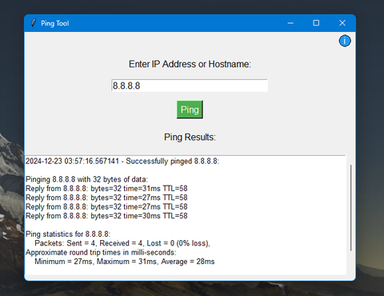

Hi, I am Joss Opena
A 3rd Year Student.
I am a 3rd Year Student, studying Computer Science. Fond of anything electronic and mechanical. An avid cyclist, music lover and caffeine enjoyer.
Projects

EchoTrace
Echo trace is designed to check and identify the connectivity between a client and a target server or device over a network.
Skills
- C++
- C#
- Python
- JavaScript